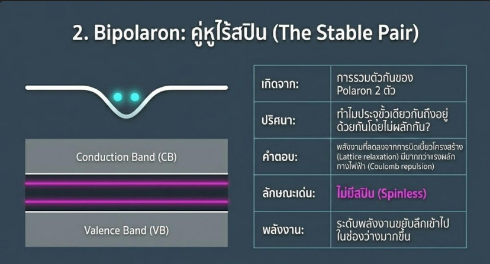

Project Artifacts

Figure 1.1: สไลด์สรุปกลไกการนำไฟฟ้าของพอลิเมอร์ตัวนำ (Conducting Polymer Mechanisms)

Figure 1.2: สไลด์สรุปกลไกการนำไฟฟ้าของพอลิเมอร์ตัวนำ (Conducting Polymer Mechanisms)
ศึกษาทฤษฎีและกลไกการนำไฟฟ้าของพอลิเมอร์ตัวนำ (Conducting Polymers) และจัดทำสื่อนำเสนอสรุปองค์ความรู้ให้เข้าใจง่าย
Core Objective
ศึกษาการเปลี่ยนสถานะของพอลิเมอร์จาก "ฉนวน" ให้กลายเป็น "ตัวนำไฟฟ้า" เทียบเท่าโลหะ (Metallic Conduction) ผ่านกระบวนการโด๊ป (Doping)
Methodology
การค้นคว้าข้อมูลเชิงลึก / ศึกษาทฤษฎีพอลิเมอร์ / การออกแบบสื่อให้เข้าใจง่าย
Key Outcome
ชุดสไลด์สรุปกลไกการนำไฟฟ้าแบบ Polaron, Bipolaron และ Soliton
ทำความเข้าใจทฤษฎีแถบพลังงาน (Band Theory) ของพอลิเมอร์ที่เป็นฉนวน (Bandgap > 1.5 eV) และวิเคราะห์การเกิดปฏิกิริยารีดอกซ์จากการโด๊ปเพื่อเหนี่ยวนำให้เกิดการนำไฟฟ้า
เจาะลึกพฤติกรรมของตัวนำประจุชนิดต่างๆ ในโครงสร้าง trans-polyacetylene (trans-PA) ได้แก่ Polaron (ประจุเดี่ยว), Bipolaron (ประจุคู่) และ Soliton
รวบรวมข้อมูลตั้งแต่การโด๊ประดับต่ำไปจนถึงระดับที่นำไฟฟ้าได้แบบโลหะ นำมาออกแบบเป็นชุดสไลด์อธิบายกลไกที่ซับซ้อนให้เป็นระบบและเข้าใจง่าย
Figure 1.1: สไลด์สรุปกลไกการนำไฟฟ้าของพอลิเมอร์ตัวนำ (Conducting Polymer Mechanisms)

Figure 1.2: สไลด์สรุปกลไกการนำไฟฟ้าของพอลิเมอร์ตัวนำ (Conducting Polymer Mechanisms)